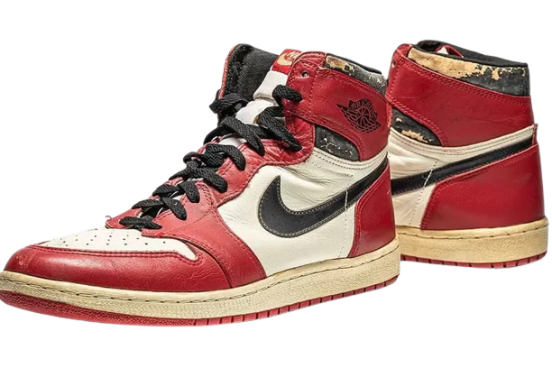

history of jordan
Penggemar basket dan sneaker pasti tak asing dengan Air Jordan. Sepatu yang diproduksi Nike itu telah mewarnai pasaran selama empat dekade terakhir. Tak hanya untuk piranti main basket, sepatu yang terinspirasi pebasket legendaris, Michael Jordan, itu kini menjadi barang koleksi yang bernilai.
Belum lama Rumah lelang Sotheby’s berhasil menjual sepatu Air Jordan yang dipakai Michael Jordan di final NBA 1998 senilai US$2,238 juta atau setara Rp33,2 miliar. Angka itu memecahkan rekor sepatu termahal yang sebelumnya juga dipegang merek Air Jordan pada September 2021.
Dikutip dari vantage.id, sneaker Air Jordan kali pertama diperkenalkan ke pasaran pada 15 September 1985. Setahun sebelumnya, sepatu tersebut hanya diproduksi custom untuk Michael Jordan. Peter Moore, Tinker Hatfield dan Bruce Kilgore berada di balik desain Air Jordan yang masih diproduksi dan laris manis hingga kini.
Di balik kesuksesan sepatu tersebut, ternyata ada “kekecewaan” seorang Michael Jordan. Jauh sebelum Nike mengikat Jordan dengan kontrak eksklusif pada 1984, Jordan sebenarnya berharap pada Adidas. Sang pebasket memang memiliki kecintaan yang amat besar pada merek asal Jerman tersebut. Adidas pun sejatinya mengirimkan tawaran bersama Nike dan Converse.
Sadar kalah start, Nike gencar melancarkan negosiasi untuk meyakinkan Jordan agar merapat ke apparelnya. Merek asal Amerika Serikat tersebut bahkan tak segan melibatkan Jordan dalam proses pembikinan sepatu. “Saya tidak pernah menggunakan Nike sampai menandatangani kontrak dengan Nike. Saya memakai Converse hingga kuliah. Sampai saat itu sepatu favorit saya adalah Adidas,” tutur Jordan dikutip dari USA Today.
Bintang Chicago Bulls itu masih tak bergeming ketika Nike mengajaknya untuk terlibat dalam pembuatan sepatu. Nike kemudian mengeluarkan “jurus” terakhirnya yakni menawarkan kontrak besar bagi pebasket asal Brooklyn, New York tersebut. Nike melayangkan kontrak senilai US$250.000 per tahun yang tergolong tinggi pada masa itu. Di titik tersebut, Jordan pun masih menaruh kecintaannya pada Adidas. Jordan memberitahu Adidas bahwa Nike telah menyodorkan nilai kontrak.
Dia hanya ingin Adidas memberikan tawaran mendekati kontrak dari Nike. Jordan sengaja tak meminta kontrak setara atau bernilai lebih besar karena kecintaannya pada Adidas. Namun cintanya ternyata bertepuk sebelah tangan. Adidas menganggap pasar Amerika belum penting dalam pengembangan merek mereka saat itu. Adidas sendiri memilih fokus pada pebasket Kareem Abdul Jabbar. “Hal itu sempurna untuk saya. Itu membuat keputusan saya menjadi lebih mudah,” ujar Jordan.
Sejak saat itu, hubungan Jordan dengan Nike terus berkembang. Nike pun mulai memproduksi massal sepatu Air Jordan pada 1985. Seperti halnya Michael Jordan, sepatu Air Jordan kini juga melegenda dan banyak dicari orang. Sejumlah seri Air Jordan bahkan memiliki harga “tak masuk akal” karena masuk barang koleksi. “Sulit mengatakan apa yang akan terjadi jika saya bergabung dengan Adidas. Yang jelas, permainan saya di lapangan tidak akan berubah karena sepatu,” tutur Jordan.